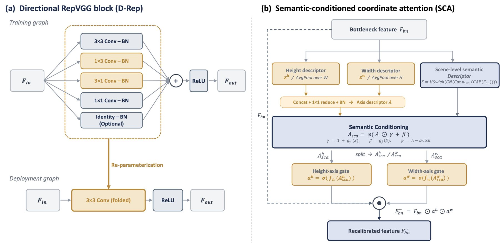
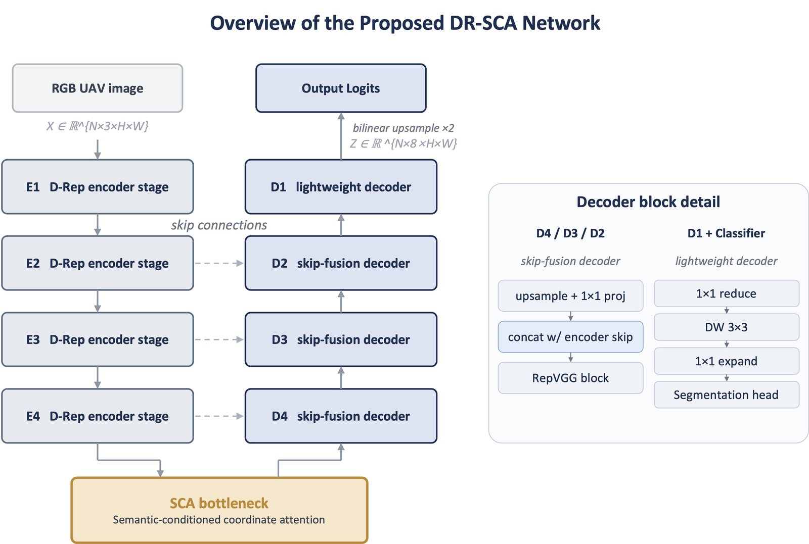
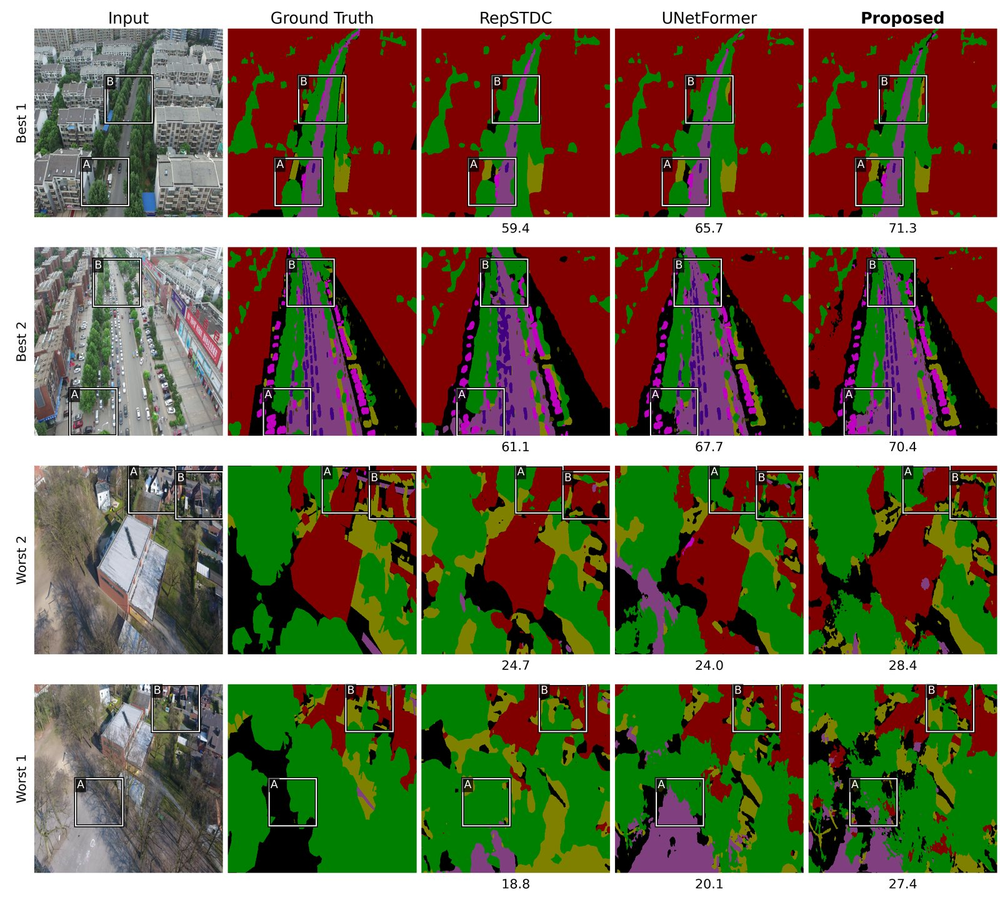

I work on computer vision for aerial and UAV imagery, where a model has to be small enough to deploy and accurate enough to matter. My first journal paper, DR-SCA, is a 2.05M-parameter segmentation network that ranks first among every compared model trained from scratch on three aerial benchmarks — and says plainly where that lead ends.
Ten-seed means on the UAVid validation split, every model trained from scratch under one shared 50-epoch protocol. Latency is batch 1 on an A100. DR-SCA uses 14.8% of UNetFormer’s parameters.
The Problem
Urban drone footage has two properties a compact model can use. It is directional: roads and building edges run in strong horizontal and vertical lines. And it is uneven: one frame is mostly roofs, the next mostly trees. I wanted a small network that leans on the first and adapts to the second — without paying for either at inference time.
Method
D-Rep · Directional RepVGG
During training, each encoder block gets horizontal 1×3 and vertical 3×1 branches next to its 3×3 kernel. Before deployment they fold algebraically into a single 3×3 convolution, so the deployed graph is exactly the plain RepVGG base. Against the heavier Diverse Branch Block it cuts training step time by 30.4% and peak memory by 29.0%, with no significant accuracy difference.
SCA · Semantic-Conditioned Coordinate Attention
Coordinate Attention pools along each axis but has no explicit view of the whole scene. SCA derives a global descriptor from the same bottleneck feature and uses it to modulate the axis descriptor, FiLM-style, before the gates are produced. It sits only at the bottleneck and adds about 0.003M parameters over Coordinate Attention.

(a) D-Rep’s training branches fold into one 3×3 convolution. (b) SCA conditions the axis descriptor on a scene-level descriptor. From Jeong & Seo (2026), CC BY 4.0.

The full network: four D-Rep encoder stages, SCA at the bottleneck only, and a lightweight skip-fusion decoder.
Results
Accuracy against size on UAVid. The dashed line joins the models no other model beats on both axes: DR-SCA and PIDNet-LW, which is slightly smaller but 15 points less accurate.
Model
Params (M)
A100 ms
UAVid
UDD6
LoveDA
DR-SCA (mine)
2.050
2.95
61.75 ± 0.30
63.33 ± 0.42
43.50 ± 0.73
UNetFormer
13.857
5.67
55.99 ± 0.32
59.31 ± 0.46
37.94 ± 0.57
RepSTDC
6.500
5.01
53.30 ± 0.42
57.00 ± 0.72
41.63 ± 0.69
ABCNet
13.427
6.73
53.27 ± 0.24
53.44 ± 1.21
33.30 ± 1.00
SegFormer-B0
3.716
9.45
50.17 ± 0.43
45.56 ± 1.15
33.83 ± 2.46
PIDNet-LW
1.874
6.22
46.33 ± 0.41
46.34 ± 1.48
37.82 ± 0.73
mIoU (%), mean ± standard deviation over ten seeds, official validation splits. Every difference from DR-SCA is significant after Bonferroni correction.
What Each Component Adds
Variant
UAVid mIoU
Gain (pp)
Base (RepVGG encoder)
59.96
—
+ D-Rep
60.79
+0.83
+ SCA
60.97
+1.01
+ D-Rep + SCA (DR-SCA)
61.75
+1.80
The two gains add up almost exactly, for 0.011M extra deployed parameters. The compact base alone already scores 59.96%, so most of the lead over the baselines comes from the base design under this protocol, not from D-Rep or SCA.
Predictions

The two highest- and two lowest-scoring UAVid validation frames for DR-SCA, next to RepSTDC and UNetFormer, with per-image mIoU under each prediction. DR-SCA scores highest on all four, but the bottom rows matter more: shadowed oblique views and thin roads still defeat every model, mine included. Click to enlarge.
Where the Result Stops
Trained from scratch. With ImageNet-pretrained encoders, the margin over UNetFormer, SegFormer-B0 and ABCNet narrows to 1.37, 0.64 and 4.28 points.
Official test split. DR-SCA is first among from-scratch models (54.30%), but pretrained SegFormer-B0 beats it by 1.23 points, and pretrained UNetFormer is statistically tied.
Speed depends on the device. Fastest on an A100 (2.95 ms), but on a T4 it takes 10.12 ms against RepSTDC’s 4.90 ms.
The blocks are not more accurate than their neighbors. D-Rep vs. DBB or an ACNet-style block, and SCA vs. plain Coordinate Attention, show no significant accuracy difference. D-Rep’s case is training cost; SCA’s is cheap input-conditioned recalibration.
Not yet on a drone. Latency on embedded UAV accelerators is untested and is the next thing to measure.
How I Work
Question
Start from a concrete gap in the literature or a deployment pain point.
Read & Reproduce
Re-implement strong baselines from scratch to internalize them.
Hypothesize
Form a falsifiable claim, sketch the simplest experiment to test it.
Experiment
Ten seeds, one fixed protocol for every model, no cherry-picked numbers.
Ablate
Strip components one by one to see what actually contributes.
Write
Clear figures first, prose second — and a section on what the result does not show.
Questions That Drive Me
Open question
“
Research Direction
Aerial Scene Understanding
Pixel-level perception for top-down imagery — drones, satellites, surveillance — where scale, viewpoint, and structure vary dramatically across a single frame.
Compact & Efficient Networks
Architectures that respect strict parameter, memory, and latency budgets without surrendering accuracy. Asking what we can remove, not just what we add.
Structure-Aware Representation
Encoding the directional and geometric regularities present in scenes — buildings, roads, vehicles — so small networks can punch above their weight.
Real-Time / On-Device Inference
From research notebook to embedded GPU — measuring latency honestly, profiling end-to-end, and treating deployment as a first-class concern.